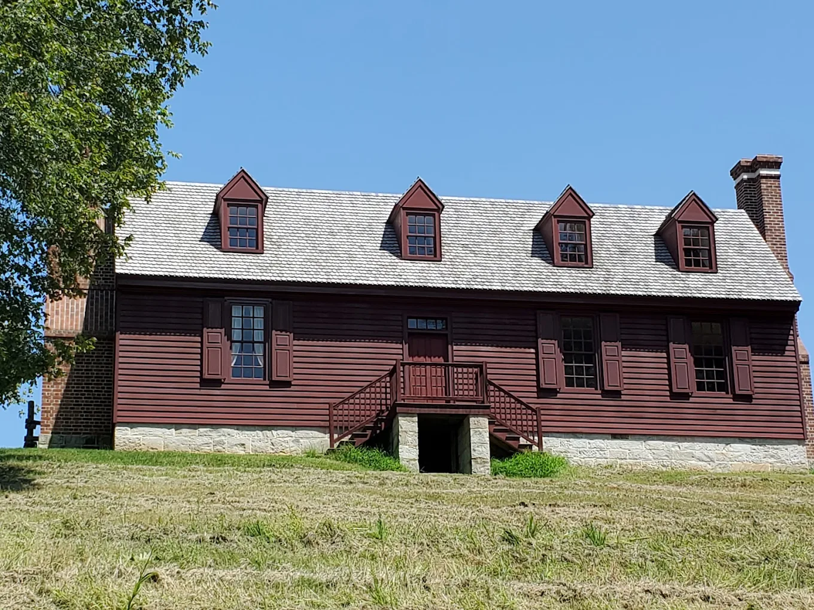
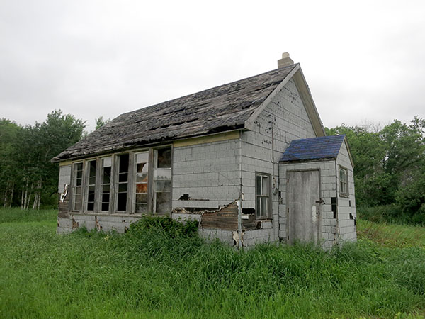

- 1. George washington spent most of his time at ferry farm in virginia.
- 
- 2. when george washington was just 11 years old his dad died. Because of this he didn't have formal education instead he went to a local school.
- 
- 3. He started his military career in 1756. where he was lutant cernal in the french and indian war.